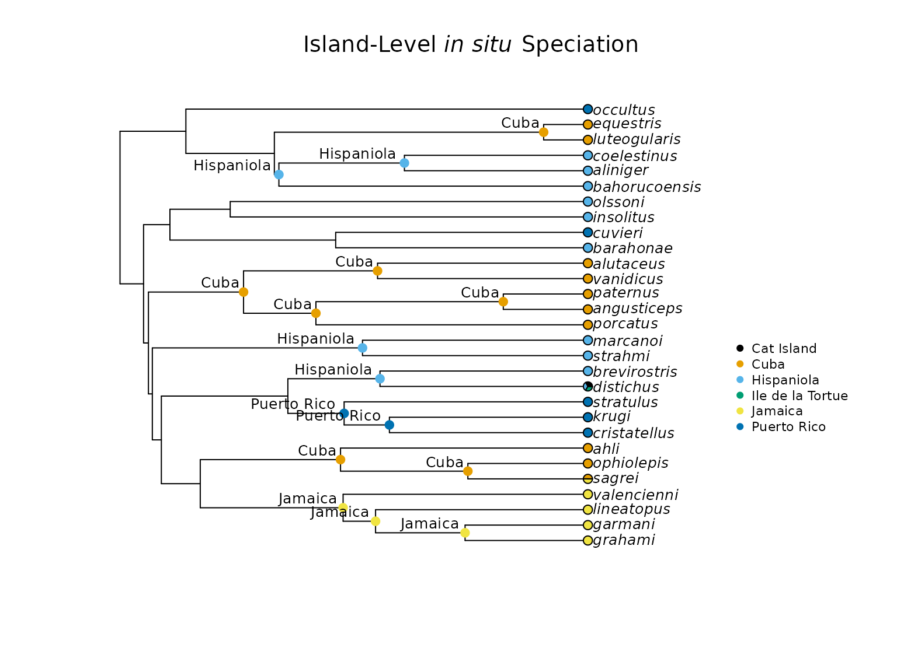
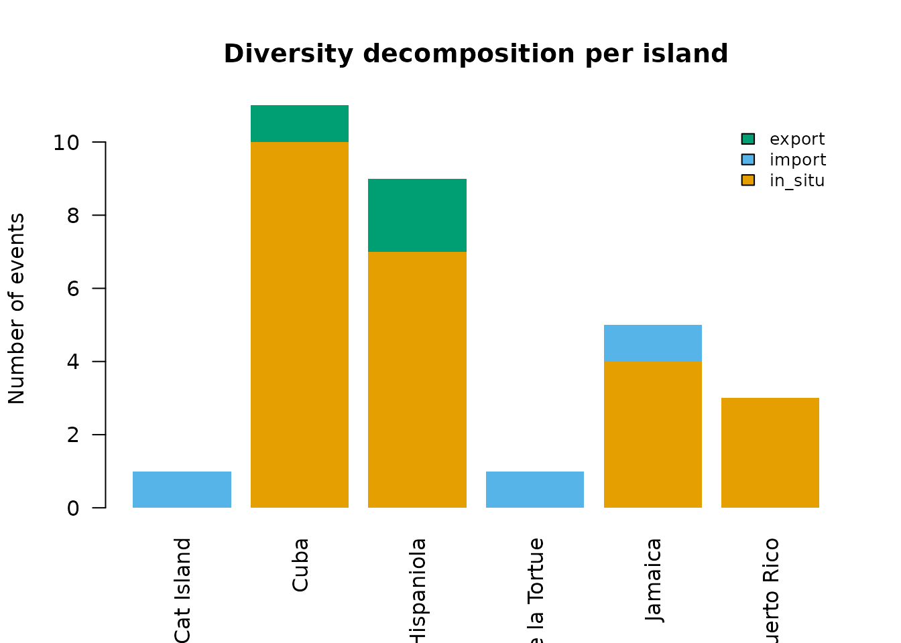
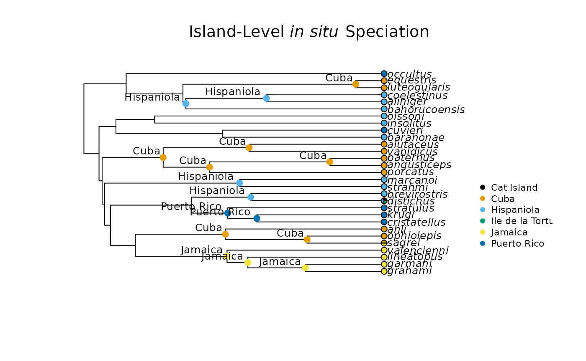

Getting Started with insitu
GettingStarted.RmdIntroduction
Extant biodiversity and species distribution across the globe result from the interplay of three fundamental processes: speciation, extinction, and dispersal. Evolutionary biologists often work to disentangle the contributions of each of these processes to the diversity we observe today. Furthermore, associating these processes with the geography on which they occur provides researchers with a clearer picture of how extant biodiversity emerged.
We can associate speciation with geography by considering in situ speciation events. A speciation event is considered to be in situ when it occurs within a specific geographical range, as opposed to a lineage colonizing a location from elsewhere. The importance of in situ speciation for understanding diversity patterns has been emphasized by decades of work, much of which discusses how in situ speciation contributes to species richness on islands.
The insitu R package provides a suite of functions that
allows the user to estimate in situ speciation events and
quantify their contribution to biodiversity in discrete geographical
units, with a primary focus on island systems and island-like
environments. This vignette will cover the functions from the
insitu package that are necessary to perform a basic
analysis that classifies nodes on a phylogeny as in situ
speciation, colonization, or dispersal events, as well as computing
diversity decomposition metrics and visualizing results.
This vignette will walk through the following steps in the
insitu pipeline:
- Data Preparation
- Classifying Events and Diversity Decomposition
- Rates, Indices, and Support
- Adaptive Radiation Bursts
Data Preparation
For its most basic functions, the insitu package
requires the user to input a phylogeny and a list of locations that each
species of interest occupies. The phylogenetic tree should be
ultrametric and include all species listed in the location data, but if
there are any mismatches in these datasets, the
insitu::prep_phylo() and
insitu::match_island_phylo() functions will address them.
The example data here includes 30 island-dwelling Anolis lizard
species sampled from the phylogenetic tree of all Anolis
species included in Patton et al. (2021).
# Load insitu library
library(insitu)
# Read in example tree
tree <- ape::read.tree(system.file("extdata/Patton_etal_trimmed.tree",
package = "insitu"))
# Handle non-ultrametricity and incomplete taxon sampling
tree <- prep_phylo(tree)
# Read in example dataset
dat <- read.csv(system.file("extdata/anolis_dat.csv",
package = "insitu"))
# Ensure that species represented in both the tree and data are the same
matched <- match_island_phylo(phy = tree, locs = dat)
#> ℹ Species dropped from the tree because they were not in the data: transversalis and heterodermus
#> ℹ Species dropped from the data because they were not in the tree: loysiana
#> ℹ Matching complete! Here are the first 5 locales in your data:
#> # A tibble: 5 × 3
#> locale species_list richness
#> <chr> <chr> <int>
#> 1 Cat Island distichus 1
#> 2 Cuba luteogularis, equestris, alutaceus, vanidicus, porc… 10
#> 3 Hispaniola coelestinus, aliniger, bahorucoensis, olssoni, inso… 10
#> 4 Ile de la Tortue distichus 1
#> 5 Jamaica valencienni, lineatopus, garmani, grahami, sagrei 5The insitu::match_island_phylo() function removes
species that are not included in both the tree and the data, and it
prints out the names of species removed from each. It also prints out
the first five locations in the dataset as a way for users to determine
whether the correct locations will be included in downstream analyses.
The matched object is a list of three items: a
presence-absence matrix (PAM) that summarizes the islands each species
occupies (1 for presence and 0 for absence), a tibble that lists each
island and all species that are present on each island, and a
phylogenetic tree with tips matching those in the user-provided
dataset.
Classifying Events and Diversity Decomposition
The insitu package provides multiple functions for
estimating ancestral character states and classifying nodes on a
phylogeny as in situ speciation, colonization, or dispersal
events. First, we will estimate ancestral character states via ancestral
state reconstruction (ASR). Then, we will classify each node as an
appropriate event based on the estimated history of that node. Next, we
will estimate and visualize diversity decomposition at each node.
Finally, we will cover methodology for classifying events without
ancestral state reconstruction.
Geography-Based Ancestral State Reconstruction
The first method for estimating ancestral states uses the PAM
included in the matched object created above to identify
extant geographical character states for each species. Then, ancestral
character states are estimated across the provided phylogeny for each
island in the dataset.
# Use the tree and PAM from the "matched" object to run an ancestral state reconstruction
asr_insitu <- run_geo_asr(phy = matched$phy, PAM = matched$PAM)The asr_insitu object is a list of ace
objects describing the ASR relevant to each island in the dataset. The
number of elements in the list resulting from
insitu::run_geo_asr() depends on the number of islands. In
this case, there are six elements in the asr_insitu
list.
The insitu package also provides functionality for using
stochastic character mapping to estimate ancestral states. The workflow
for this methodology is outlined in the
Stochastic Character Mapping With insitu vignette. At the
end of the Classifying Events and Diversity Decomposition
section, we also cover methods for classifying nodes that do not require
ancestral state reconstruction.
Classify Speciation Events
Now that we have estimated ancestral character states, we can use
them to determine whether speciation events occurred in situ
(within a given island) by determining whether the most recent common
ancestor between two tips is likely to have occurred on the same island
as the descendants. For this task, we will use the
insitu::map_insitu_events() function. This function
requires the user to input the ancestral state reconstructions returned
by insitu::run_geo_asr(), the matched phylogeny and PAM
returned by insitu::match_island_phylo(), and a threshold
probability for determining whether in situ speciation is
evident. The default threshold probability is 0.5, meaning that if the
probability that an ancestor occupied a given island is 0.5 or greater,
and the descendants of that node also have the same island state, the
insitu::match_island_phylo() function will determine that
an in situ speciation event occurred.
# Using the ASR from above, determine whether speciation events occurred in situ
map_events <- map_insitu_events(recons = asr_insitu,
phy = matched$phy,
PAM = matched$PAM,
threshold = 0.5)
# Look at the first 5 entries in the event data frame
head(map_events, n = 5)
#> node island ancestor_presence_prob in_situ export import
#> 1 32 Cuba 0.0004768696 FALSE <NA> <NA>
#> 2 33 Hispaniola 0.1330833336 FALSE <NA> <NA>
#> 3 35 Jamaica 0.0267314591 FALSE <NA> <NA>
#> 4 36 Jamaica 0.9837431335 TRUE <NA> <NA>
#> 5 37 Jamaica 0.9977352874 TRUE <NA> <NA>The resulting data frame includes: the node number, the island state, the probability that the ancestor of a given node shares the same island state, and whether this node represents an in situ speciation event. The bottom of the data frame includes information on estimated transitions between islands, their associated nodes, and the islands associated with the transition. An island in the “export” column were originally occupied by the species that now occupy the island in the “import” column.
Visualize in situ Speciation Events on the Phylogeny
We can visualize the probabilities and classifications provided by
the insitu::map_insitu_events() function on the
Anolis phylogeny using the
insitu::plot_classified_phylo() function. When the ancestor
presence probability has reached or exceeded the treshold (0.5 in this
case), a colored dot will be placed on the associated node that
corresponds to the island on which the in situ speciation event
occurred.
plot_classified_phylo(phy = matched$phy, events = map_events, PAM = matched$PAM)
This annotated phylogeny helps visualize how these Anolis species diversified across Cuba, Hispaniola, Jamaica, and Puerto Rico.
Partition Species Richness Into Different Components (in situ speciation, import, and export events)
When speciation events were classified above using the
insitu::map_insitu_events() function, we acknowledged, but
did not work with, the number of import and export events. The following
functions address all of the different events discussed so far and
summarize their relative importance to the system of interest.
First, we will use the insitu::decompose_diversity()
function with the phylogeny and PAM returned from the
insitu::match_island_phylo() function, along with the
events returned from the insitu::map_insitu_events()
function to determine the number of species, in situ speciation
events, import events, and export events associated with each
island.
div <- decompose_diversity(phy = matched$phy,
events = map_events,
PAM = matched$PAM)
# Look at the first 5 rows of the classification data frame
head(div, n = 5)
#> island n_species n_insitu n_import n_export prop_insitu
#> 1 Cat Island 1 0 1 0 0.0
#> 2 Cuba 10 10 0 1 1.0
#> 3 Hispaniola 10 7 0 2 0.7
#> 4 Ile de la Tortue 1 0 1 0 0.0
#> 5 Jamaica 5 4 1 0 0.8The results of the insitu::decompose_diversity()
function give us a clearer picture of how species richness accumulated
on each function. This diversity decomposition can be further visualized
using the insitu::plot_diversity_decomposition()
function.
# Visualize diversity decomposition per island in a stacked bar chart
plot_diversity_decomposition(div)
The stacked bar plot above accentuates the importance of in
situ speciation in contributing to species richness for Cuba,
Hispaniola, Jamaica, and Puerto Rico, while also highlighting import and
export events. We can compare these events statistically through the use
of the insitu::compare_islands() function, which runs
chi-squared and Kruskal-Wallis tests to determine whether event counts,
in situ rates, and colonization rates differ across
islands.
# Determine whether:
# - In situ speciation, import, and export counts differ across islands
# - In situ and colonization rates differ across islands
comp_div <- compare_islands(div)The comp_div object created using the
insitu::compare_islands() function is a list of three
elements: counts_test, insitu_rate_test, and
colonization_rate_test. Each one contains the summary
output for each test: - counts_test is a chi-squared test
that determines whether in situ speciation, import, and export
counts differ across islands. - insitu_rate_test is a
Kruskal-Wallis test that determines whether in situ speciation
rates differ across islands. - colonization_rate_test is a
Kruskal-Wallis test that determines whether colonization rates differ
across islands.
The results for this example are printed below:
comp_div
#> $counts_test
#>
#> Pearson's Chi-squared test
#>
#> data: counts_mat
#> X-squared = 23.273, df = 10, p-value = 0.009783
#>
#>
#> $insitu_rate_test
#>
#> Kruskal-Wallis rank sum test
#>
#> data: insitu_rate by div$island
#> Kruskal-Wallis chi-squared = 5, df = 5, p-value = 0.4159
#>
#>
#> $colonization_rate_test
#>
#> Kruskal-Wallis rank sum test
#>
#> data: colonization_rate by div$island
#> Kruskal-Wallis chi-squared = 5, df = 5, p-value = 0.4159The p-values for each test indicate that the event counts in general differ between islands, but the in situ speciation and colonization rates are not statistically significantly different between islands.
Rates, Indices, and Support
Up to this point, we have focused on event classification and
visualization. In this section, we will cover functionality in the
insitu package that allows for the calculation of helpful
rates and indices that further contextualize the emergence of
biodiversity on the islands of interest.
Determine Colonization Rates
Species richness results from the interplay of speciation,
extinction, and dispersal. Determining the rate at which lineages
colonize islands helps provide a clearer picture of the drivers of
species richness. The insitu::colonization_rate() function
determines how many colonization events each species is associated with
and provides a colonization rate associated with that species’
lineage.
# Colonization rate (how many times each species has colonized an island)
colonization_rate(phy = matched$phy, events = map_events)
#> species n_import n_export n_colonization colonization_rate
#> 1 grahami 0 0 0 0.00000000
#> 2 garmani 0 0 0 0.00000000
#> 3 lineatopus 0 0 0 0.00000000
#> 4 valencienni 0 0 0 0.00000000
#> 5 sagrei 1 1 1 0.02138029
#> 6 ophiolepis 0 0 0 0.00000000
#> 7 ahli 0 0 0 0.00000000
#> 8 cristatellus 0 0 0 0.00000000
#> 9 krugi 0 0 0 0.00000000
#> 10 stratulus 0 0 0 0.00000000
#> 11 distichus 1 1 1 0.02138029
#> 12 brevirostris 0 0 0 0.00000000
#> 13 strahmi 0 0 0 0.00000000
#> 14 marcanoi 0 0 0 0.00000000
#> 15 porcatus 0 0 0 0.00000000
#> 16 angusticeps 0 0 0 0.00000000
#> 17 paternus 0 0 0 0.00000000
#> 18 vanidicus 0 0 0 0.00000000
#> 19 alutaceus 0 0 0 0.00000000
#> 20 barahonae 0 0 0 0.00000000
#> 21 cuvieri 0 0 0 0.00000000
#> 22 insolitus 0 0 0 0.00000000
#> 23 olssoni 0 0 0 0.00000000
#> 24 bahorucoensis 0 0 0 0.00000000
#> 25 aliniger 0 0 0 0.00000000
#> 26 coelestinus 0 0 0 0.00000000
#> 27 luteogularis 0 0 0 0.00000000
#> 28 equestris 0 0 0 0.00000000
#> 29 occultus 0 0 0 0.00000000Here, we can see that only Anolis sagrei and Anolis distichus were involved in colonization events.
Calculate the in situ Speciation Index
In an effort to standardize comparisons across islands to determine
the relative importance of in situ speciation events in
contributing to species richness, the insitu package
includes a function to calculate the isci index. This index
represents the number of in situ speciation events on an island
divided by the total branch length of the island’s subtree.
# Per-island in situ speciation index
insitu_speciation_index(phy = matched$phy, events = map_events)
#> island n_insitu island_bl isci
#> 1 Cuba 7 103.02752 0.06794301
#> 2 Hispaniola 4 52.27162 0.07652336
#> 3 Jamaica 3 30.36114 0.09881053
#> 4 Puerto Rico 2 10.15259 0.19699404In this example, Puerto Rico has the largest isci value,
indicating that in situ speciation contributed more species
over a shorter amount of evolutionary time compared to the other
islands.
Determine Node Support
The insitu::map_insitu_events() function returns
probabilities for the most likely ancestral states among all islands for
each node. If the user would like to conduct additional sensitivity
analyses related to these ancestral state probabilities, the
insitu package provides a function that displays the
ancestral state probabilities for each island and node combination. It
also determines whether the given probability corresponds with low
(probability less than 0.5), moderate (probability between 0.5 and
0.75), or high (probability above 0.75) support.
# Determine per-node support for in situ speciation events
insitu_conf <- insitu_confidence(recons = asr_insitu)
head(insitu_conf, n = 30)
#> node island prob support
#> 30 30 Cat Island 2.544387e-05 low
#> 31 31 Cat Island 2.446989e-08 low
#> 32 32 Cat Island 3.966199e-09 low
#> 33 33 Cat Island 1.630836e-08 low
#> 34 34 Cat Island 1.326783e-07 low
#> 35 35 Cat Island 1.543357e-06 low
#> 36 36 Cat Island 2.329244e-06 low
#> 37 37 Cat Island 1.358496e-06 low
#> 38 38 Cat Island 2.596481e-06 low
#> 39 39 Cat Island 8.563237e-06 low
#> 40 40 Cat Island 3.607820e-06 low
#> 41 41 Cat Island 1.122414e-04 low
#> 42 42 Cat Island 4.251625e-06 low
#> 43 43 Cat Island 3.806389e-06 low
#> 44 44 Cat Island 1.139486e-02 low
#> 45 45 Cat Island 2.029607e-05 low
#> 46 46 Cat Island 1.986440e-06 low
#> 47 47 Cat Island 7.205493e-06 low
#> 48 48 Cat Island 2.585020e-06 low
#> 49 49 Cat Island 1.135155e-05 low
#> 50 50 Cat Island 6.639532e-07 low
#> 51 51 Cat Island 2.007101e-05 low
#> 52 52 Cat Island 1.478841e-05 low
#> 53 53 Cat Island 6.068960e-06 low
#> 54 54 Cat Island 4.519986e-07 low
#> 55 55 Cat Island 5.812977e-07 low
#> 56 56 Cat Island 8.054252e-06 low
#> 57 57 Cat Island 1.002721e-06 low
#> 301 30 Cuba 5.880850e-04 low
#> 311 31 Cuba 1.428336e-04 lowIncorporating Island Ontogeny
Island ontogeny describes the different stages of emergence and subsistence that oceanic islands experience, and can be thought of as an island’s “life cycle.” There exists a balance between the age of an island and it species richness: old, large islands often have more species compared to young, small islands, but once an island becomes old enough, it begins to lose area and habitat as it erodes into the ocean. Whittaker et al. (2008) incorporated island ontogeny in their General Dynamic Model of island biogeography, which we suggest users review for additional context.
The insitu R package focuses on metrics that help us
understand the role in situ speciation has in contributing to
species richness on island systems. What do we do if an estimated in
situ speciation event on an internal node is older than the island
itself? By incorporating the age of islands in the dataset, we are able
to determine whether it is appropriate to mark a node as an in
situ speciation event on an island, or if the speciation event is
more likely to have occurred on a continent before the lineage colonized
the islands of interest.
Geologists struggle to define exact ages for the Caribbean Islands,
so the island ages written here are either estimates or manufactured
ages that help us emphasize the functionality of the insitu
R package. First, we will create a named vector of island ages for the 6
islands included in our example dataset. Then, we will use this named
vector, along with the map_events object created by
insitu::map_insitu_events() above and the matched phylogeny
to determine whether the speciation events identified are realistic
depending on the age of the islands
# Create named numeric vector of island ages
ages <- c(42,
50,
25,
46,
10,
15)
island_names <- c("Cuba",
"Hispaniola",
"Jamaica",
"Puerto Rico",
"Cat Island",
"Ile de la Tortue")
# Assign the names to the numeric vector
names(ages) <- island_names
# Flag in situ speciation events if they are too young
age_correct_events(events = map_events,
phy = matched$phy,
island_ages = ages,
remove_predating = FALSE)
#> 2 node(s) predate their island's formation age and are flagged.
#> node island ancestor_presence_prob in_situ export import
#> 1 32 Cuba 0.0004768696 FALSE <NA> <NA>
#> 2 33 Hispaniola 0.1330833336 FALSE <NA> <NA>
#> 3 35 Jamaica 0.0267314591 FALSE <NA> <NA>
#> 4 36 Jamaica 0.9837431335 TRUE <NA> <NA>
#> 5 37 Jamaica 0.9977352874 TRUE <NA> <NA>
#> 6 38 Jamaica 0.9998792396 TRUE <NA> <NA>
#> 7 39 Cuba 0.9119735154 TRUE <NA> <NA>
#> 8 40 Cuba 0.9958979894 TRUE <NA> <NA>
#> 9 42 Puerto Rico 0.9053890758 TRUE <NA> <NA>
#> 10 43 Puerto Rico 0.9741656727 TRUE <NA> <NA>
#> 11 44 Hispaniola 0.7078835948 TRUE <NA> <NA>
#> 12 45 Hispaniola 0.8106870642 TRUE <NA> <NA>
#> 13 46 Cuba 0.9407811473 TRUE <NA> <NA>
#> 14 47 Cuba 0.9861511839 TRUE <NA> <NA>
#> 15 48 Cuba 0.9996846026 TRUE <NA> <NA>
#> 16 49 Cuba 0.9924222283 TRUE <NA> <NA>
#> 17 50 Hispaniola 0.2592652181 FALSE <NA> <NA>
#> 18 52 Hispaniola 0.4863067008 FALSE <NA> <NA>
#> 19 55 Hispaniola 0.5155452437 TRUE <NA> <NA>
#> 20 56 Hispaniola 0.8830491382 TRUE <NA> <NA>
#> 21 57 Cuba 0.9969631141 TRUE <NA> <NA>
#> 22 5 TRANSITION NA NA Cuba Jamaica
#> 23 11 TRANSITION NA NA Hispaniola Cat Island
#> 24 11 TRANSITION NA NA Hispaniola Ile de la Tortue
#> node_age island_age predates_island
#> 1 4.393220e+01 42 TRUE
#> 2 4.354118e+01 50 FALSE
#> 3 3.875137e+01 25 TRUE
#> 4 2.447172e+01 25 FALSE
#> 5 2.122746e+01 25 FALSE
#> 6 1.227807e+01 25 FALSE
#> 7 2.473021e+01 42 FALSE
#> 8 1.199797e+01 42 FALSE
#> 9 2.436864e+01 46 FALSE
#> 10 1.984072e+01 46 FALSE
#> 11 2.078444e+01 50 FALSE
#> 12 2.253088e+01 50 FALSE
#> 13 3.442355e+01 42 FALSE
#> 14 2.718870e+01 42 FALSE
#> 15 8.458005e+00 42 FALSE
#> 16 2.102785e+01 42 FALSE
#> 17 4.178154e+01 50 FALSE
#> 18 3.575623e+01 50 FALSE
#> 19 3.088996e+01 50 FALSE
#> 20 1.834137e+01 50 FALSE
#> 21 4.422603e+00 42 FALSE
#> 22 1.270000e-08 NA FALSE
#> 23 1.170000e-08 NA FALSE
#> 24 1.170000e-08 NA FALSEHere, we find that two in situ speciation events predate the
islands on which they are estimated to occur: node 32 associated with
Cuba, and node 35 associated with Jamaica. If we set the
remove_predating parameter to TRUE, the
function will remove these events and the returned data frame can be
used to plot in situ speciation events on the phylogeny as
above.
# Remove in situ speciation events if they are too young
new_events <- age_correct_events(events = map_events,
phy = matched$phy,
island_ages = ages,
remove_predating = TRUE)
#> 2 node(s) predate their island's formation age and have been removed.
# Plot phylogeny with newly filtered events
plot_classified_phylo(phy = matched$phy, events = new_events, PAM = matched$PAM)
We can also incorporate island age into the calculation of
isci, the in situ speciation rate index. The
insitu::insitu_rate_by_island_age() function uses the
phylogeny, event object created by
insitu::age_correct_events(), and the named numeric vector
of island ages created above to calculate the corrected
isci value for each island.
insitu_rate_by_island_age(phy = matched$phy, events = new_events, island_ages = ages)
#> island n_insitu island_age insitu_rate_corrected
#> Cuba Cuba 7 42 0.16666667
#> Hispaniola Hispaniola 4 50 0.08000000
#> Jamaica Jamaica 3 25 0.12000000
#> Puerto Rico Puerto Rico 2 46 0.04347826
#> Cat Island Cat Island 0 10 0.00000000
#> Ile de la Tortue Ile de la Tortue 0 15 0.00000000Literature Cited
- Patton, A. H., Harmon, L. J., del Rosario Castañeda, M., Frank, H. K., Donihue, C. M., Herrel, A., & Losos, J. B. (2021). When adaptive radiations collide: Different evolutionary trajectories between and within island and mainland lizard clades. Proceedings of the National Academy of Sciences, 118(42), e2024451118
- Whittaker, R. J., Triantis, K. A., & Ladie, R. J. (2008). A general dynamic theory of oceanic island biogeography. Journal of Biogeography, 35(6), 977–994.